Plugin de Clases de Análisis
El plugin Diagrama de Clases de Análisis permite modelar en fases tempranas del diseño las relaciones entre las clases estableciendo el rol de estas respecto del rol que cumplirán en el sistema, como tal el diagrama incluye elementos de tipo clase diferenciados en Clase Límite, Clase Control, Clase Entidad y elementos de tipo relacional propias de un diagrama de clases
Los elementos propios de este diagrama son:
- Clase Límite
- Clase Control
- Clase Entidad
- Agregación
- Otras Elementos Relacionales entre Clases
Creación de un nuevo Diagrama de Interés:
Colosoft
soporta el Plugin de Clases de Análisis mediante la creación de un nuevo
diagrama de Clases de Análisis.
Para la creación de un nuevo diagrama se selecciona en
el Marco de Expresión: Nuevo, Analista de Sistemas, Diagrama de
Clases de Análisis.
Se ingresan los datos correspondientes al diagrama.
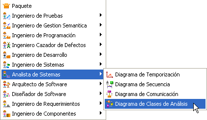
Figura 1. Creando diagrama de clases de análisis
Barra de herramientas del Plugin Diagrama de Clases de Análisis:
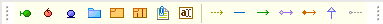
Figura 2. Barra del marco para el plugin
Clase Límite : Estas clases interactúan directamente con actores y elementos fuera de la frontera de donde se encuentran.
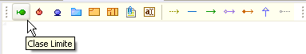
Figura 3. Botón de creación de clase límite
Para agregar una nueva Clase se selecciona el icono Clase Limite y luego se hace clic en algún espacio en blanco del diagrama, sobre un frame o sistema.
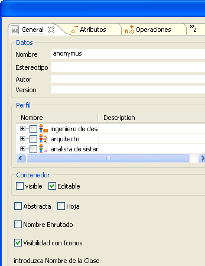
Figura 4. Panel de creación de clase límite
La figura 4 muestra la ventana de especificación de una clase, igual a la ventana de especificación de una Clase en el diagrama de Clases.
La clase Limite permite establecer agregaciones con otras Clases de tipo Control.
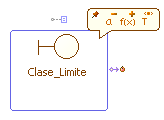
Figura 5. Representación de una clase límite
Para más información sobre las especificación de una clase nueva, vea Diagrama de Clases.
Clase Control : Estas clases interactúan con las clases de limite y entidad, actuando como mediador entre estas.
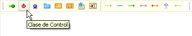
Figura 6. Botón de creación de una clase de control
Para agregar una nueva clase se selecciona el icono Clase Limite y luego se hace clic en algún espacio en blanco del diagrama, sobre un frame o sistema.
Figura 7. Panel de creación de una clase de control
La figura 7 muestra la ventana de especificación de una clase, igual a la ventanda de especificación de una Clase en el diagrama de Clases.
La clase Control permite establecer agregaciones desde Clases de Tipo Limite y hacia Clases de tipo Entidad.

Figura 8. Clase de control
Para más información sobre las especificación de una clase nueva, vea Diagrama de Clases.
Clase Entidad : Estas clases interactúan con las clases de limite y entidad, actuando como mediador entre estas.
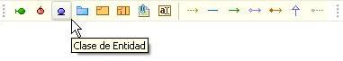
Figura 9. Botón de creación de una clase entidad
Para agregar una nueva clase se selecciona el icono Clase Limite y luego se hace clic en algún espacio en blanco del diagrama, sobre un frame o sistema.
Figura 10. Panel de creación de una clase entidad
La Figura 10 muestra la ventana de especificación de una clase entidad, igual a la ventanda de especificación de una Clase en el diagrama de Clases.
La clase Entidad permite establecer agregaciones desde Clases de Tipo Control.
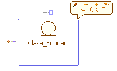
Figura 11. Clase entidad
Para más información sobre las especificación de una clase nueva, vea Diagrama de Clases.
Frame con Niveles: El diagrama de clases de Análisis permite crear una forma particular de Frames que además contienen niveles en su interior a modo de divisiones.
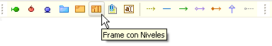
Figura 12. Creación de un frame con niveles
Para agregar un nuevo Frame con Niveles se selecciona el icono Frames Con Niveles y luego se hace clic en algún espacio en blanco del diagrama.
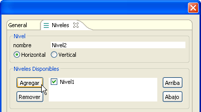
Figura 13. Datos de creación de un frame con niveles
La Figura 13 muestra la ventana de especificación de una Frame Por Niveles, establezca el nombre del frame en la Pestaña general, y agregue niveles de tipo Horizontal o vertical en la pestaña Niveles. Primero escriba el nombre del nivel, seleccione si es horizontal o vertical y a haga clic en agregar. También puede eliminar niveles y reordenarlos.
Un frame con dos niveles Horizontales luce como sigue:
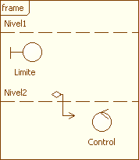
Figura 14. Representación de un frame con niveles
Agregaciones: Genere agregaciones directamente con los iconos de expansión de los elementos Clase Limite, Clase Control o Clase Entidad. También puede libremente agregaciones en cualquier sentido haciendo clic en el icono de Agregación y luego enlazando dos elementos de clase.
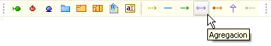
Figura 15. Creación de agregación
Un esquema normal de agregaciones luce como sigue:
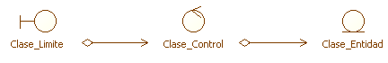
Figura 16. Diferentes tipos de agregaciones
Para más información sobre las especificación de una agregación y la creación de otros tipos de relaciones: vea Diagrama de Clases.